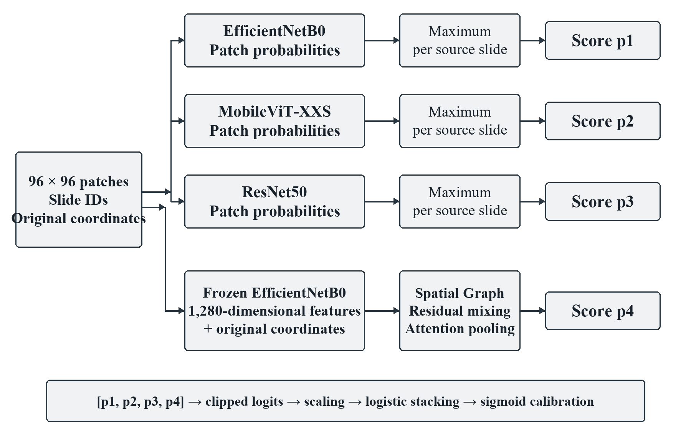
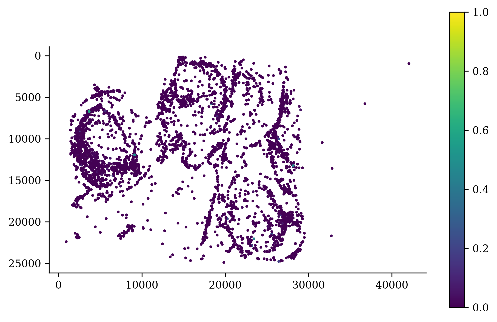

Loading the updated manuscript abstract…
The recorded ensemble advantage was lower probability error. The complete system did not lead on every detection or ranking measure.
Computational pathology research · RSTF 2026
Using Patch-Based Deep Learning, Spatial Graph Analysis, and Calibrated Logistic Stacking

Internal exploratory evaluation · 128 sampled source-slide groups · 48 positive / 80 negative
The study at a glance
From a pathology problem to a four-expert framework and its recorded evidence.
Loading the updated manuscript abstract…
The recorded ensemble advantage was lower probability error. The complete system did not lead on every detection or ranking measure.
Why the study matters
Small metastatic deposits can occupy only a small part of a large lymph-node tissue image.
Patch classifiers examine local tissue appearance. Spatial context also describes how regions relate within a source slide.
Budginaite et al. (2024); Tauqeer et al. (2025)
Three image experts score tissue patches. A Spatial Graph Expert connects nearby patches using coordinates and frozen image features.
STEGASUS manuscript, Sections 2.2–2.3
Calibrated logistic stacking combines four scores. Detection, ranking, and probability quality are evaluated separately.
Silva Filho et al. (2023); Reinke et al. (2024)
1Evaluate the individual experts and calibrated ensemble on sampled source-slide groups.
2Examine spatial connections, expert contributions, and adapted multiple-instance learning comparators.
3Assess frozen whole-slide processing and present traceable outputs through the website and Research Studio.
Condensed from the manuscript objectives. Detailed experimental records are available below.
Supports research on computational assessment of metastatic breast cancer in lymph-node tissue.
Develops a documented computational framework and research platform.
From patches to evidence
Three phases: model development and grouped evaluation, frozen whole-slide processing, and the research application.
The four-expert framework
The graph reuses frozen EfficientNetB0 features. The four scores are complementary inputs, not statistically independent observations.

What the experiments showed
Explore the evidence by question. Each view pairs recorded results with their interpretation.
The same 128 source-slide groups; each model uses its own development-selected threshold.
Updated manuscript, Tables 5–6
17/27 micrometastasis groups and 20/21 macrometastasis groups detected. Ten of eleven missed positive groups were micrometastases.
Matched graph controls and refitted expert-removal pipelines answer different questions.
Mean AUROC across seeds 42, 123, and 2026. Axis starts at zero.
Updated manuscript, Table 7
Removing MobileViT-XXS increased sensitivity to 83.33% while lowering specificity to 97.50%. Each reduced stacker was refitted and received its own development-selected threshold.
Updated manuscript, Table 8
Whole-slide cohorts are reported separately from sampled PCam groups.
Threshold held at 0.628536. These selected, nonmatched cohorts do not establish a controlled dataset effect or independent diagnostic validation.
Common frozen EfficientNetB0 features and sampled bags; primary comparator seed 42.
Updated manuscript, Tables 9–10
0.9956 ± 0.0008
DTFD-MIL mean AP ± sample SD. It had the smallest AP variation across three seeds; CAMIL varied more.
Recorded MIL-head inference uses cached features. It excludes slide reading, tissue selection, patch extraction, and image-feature computation.
Complete STEGASUS whole-slide timing was not systematically recorded. Head-only timing cannot establish an end-to-end speed claim.
Tables from the updated manuscript and supporting figures retained from the earlier website archive.
From scores to slide examples
A classification describes the whole slide. A ResNet50 patch-score map shows a separate spatial output.

Elevated scores mark locations where ResNet50 responded more strongly. The four-expert decision combines aligned slide scores through the frozen stacker.
The supplementary WILDS analysis covered 85,054 patches from 10 slides and nine patients. All sampled bags were positive under the patch-derived definition, and the slides appeared in the prior inventory.
This evaluation could not estimate bag-level specificity or AUROC, or establish independent whole-slide generalization.
Recorded examples from updated manuscript Figure 14. Scores use the unchanged threshold of 0.628536.
Bars span scores 0–1; the vertical mark indicates the threshold. Scores are not validated patient-risk probabilities. Examples are descriptive, not a separate localization experiment.
Interpreting the evidence
Internal and selected CAMELYON16 material had been inspected during development. Patient-level independence was unverified.
SLN-Breast analysis used ten of twenty selected slides with saved predictions. One included prediction had an unresolved execution-status discrepancy.
Micrometastases accounted for most missed internal positive groups. A negative flag does not exclude metastatic tissue.
Heatmaps lack validated lesion boundaries. Clinical usefulness, complete application processing, and reader benefit need dedicated evaluation.
What the study supports
Use genuinely unseen, patient-disjoint cohorts, fixed test thresholds, and both reference classes and lesion-size groups.
Study tissue sampling, aggregation, and calibration using separate development material.
Compare maps with verified lesion annotations before interpreting them as tumor boundaries.
Record whole-slide time and resources, verify Studio processing, and measure reader or workflow benefit directly.